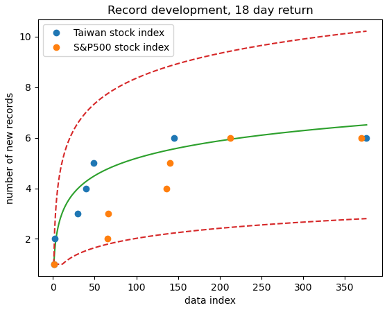
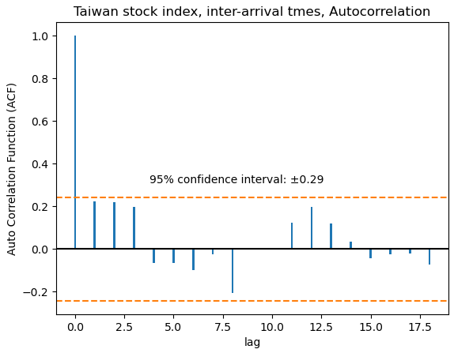
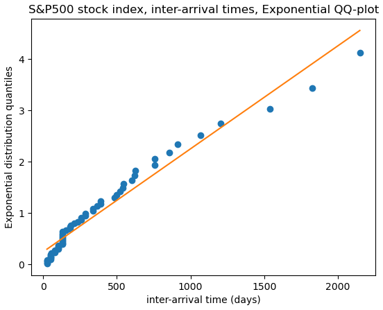
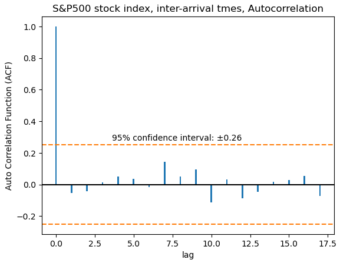
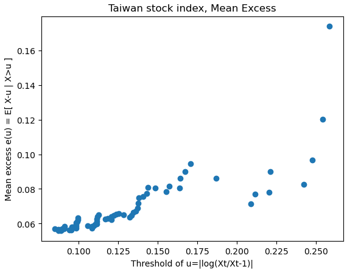
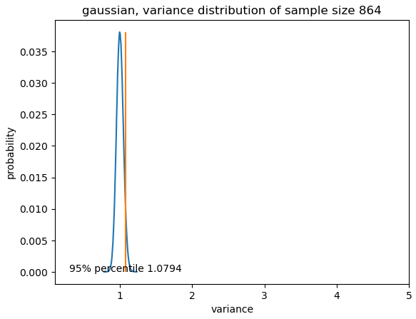
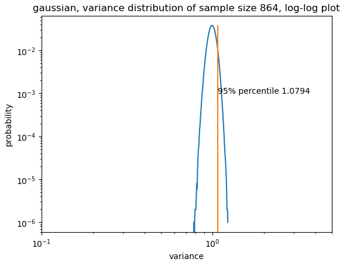
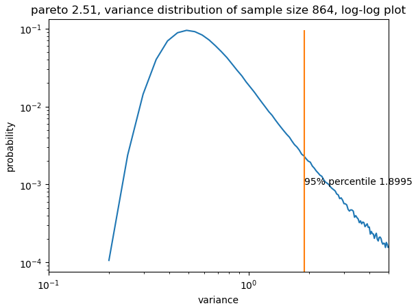
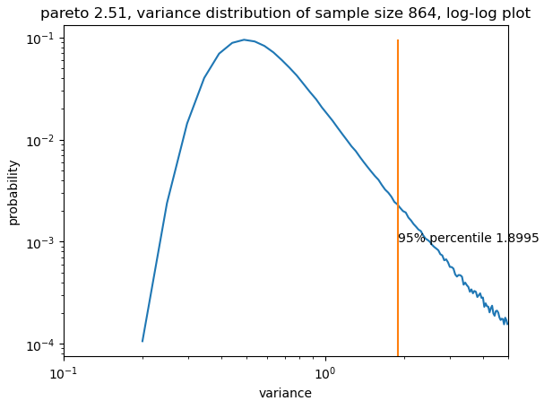
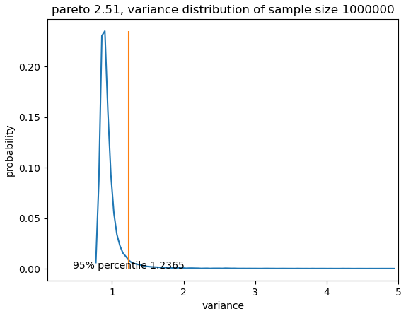

Statistics
Mean \(E(X)\) may not capture a problem's concern
Flip a fair coin 100 times—it gives a sequence of heads (H) and tails (T). For each HH in the sequence of flips, Alice gets a point; for each HT, Bob does, so e.g. for the sequence THHHT Alice gets 2 points and Bob gets 1 point. Who is most likely to win?
-- Daniel Litt
Answer: Bob wins
An intuitive explanation is that HH's distribution is more skewed due to the fact that HH's possible scores are much higher due to consecutive heads. Thus, HH's distribution has more probability mass in the region x < mean. Since HH and HT have the same mean, it follows that HH < HT happens more frequently.
Let n be the sequence length, the mean of Alice's and Bob's distributions are the same (n-1)/4. The below diagram shows the distributions of HH and HT and HH - HT:


As we increase n, the number of possible sequences increases exponentially. Thus we experiment with the sampling method, too. As shown in the below diagrams for n = 32, the sampling method matches pretty well with the exact one:


Having confirmed that sampling works, we plot the case for n = 1024

It seems that the Central Limit Theorem is in effect here. Moreover the edge HT over HH has diminishes as the sequence length increases:
| 16 | 32 | 1024 | |
hh < ht | 0.464 | 0.475 | 0.495 |
hh == ht | 0.143 | 0.100 | 0.018 |
hh > ht | 0.393 | 0.425 | 0.487 |
Mean Deviation is more useful than Standard Deviation
The classical argument regarding the Standard Deviation \(\sqrt{\frac{1}{n-1}\sum(x-\overline{x})^{2}}\) having an advantage over the Mean Absolute Deviation \(\frac{1}{n}\sum\left| x - \overline{x} \right|\) is a fragile one. It works only for the perfect Normal distribution and collapses at the slightest occurance of fat tails. In mathematical terms, the argument states that the statistical efficiency \(\frac{Var(X)}{E(X)^{2}}\) of the Standard Deviation is better than that of the Mean Deviation:
$$\displaylines{ \begin{aligned} \text{Asymptotic Relative Efficiency (ARE)} =\space & \underset{n\to \infty }{lim}\left( \frac{\frac{Var(Std)}{E(Std)^{2}}}{\frac{Var(Mad)}{E(Mad)^{2}}} \right) \\ =\space & \underset{n\to \infty }{lim}\frac{\frac{n{\Gamma(\frac{n}{2})}^{2}}{2{\Gamma(\frac{n+1}{2})}^{2}}-1}{\frac{\pi-2}{2n}} \\ =\space & \frac{1}{\pi-2} \simeq 0.875 \end{aligned} }$$However, this result quickly becomes invalidated when considering the simplest model for volatility, which is a mixing model with an occasional jump with probability \(p\):
$$\displaylines{ Var(x)=\begin{cases} \sigma^{2}(1+a) & \text{with probability $p$} \\ \sigma^{2} & \text{with probability $p-1$} \end{cases} }$$The below diagram shows simulation results with \(p=0.01\) and \(n=10000\):

We see that even though for \(a=0\) \(RE=0.878\), for \(a=2\) \(RE=1.434\) which starts to cause degradation. In other words, a minute presence of outliers makes MAD more efficient than STD.
Morever, many statistical phenomena and processes have "infinite variance" (such as the popular Pareto 80/20 rule) but have finite, and sometimes very well behaved, mean deviations. Whenever the mean exists, MAD exists. The reverse (infinite MAD and finite STD) is never true.
In summary, we should retire the notion of Standard Deviation and replace it with the more effective one of Mean Deviation. Standard deviation, STD, should be left to mathematicians, physicists and mathematical statisticians deriving limit theorems. There is no scientific reason to use it in statistical investigations in the age of the computer.
The Central Limit Theorem does not apply to many real world problems with finite sample sizes
The Generalized Central Limit Theorem states that the sum of random variables \(S_{n} = X_{1}+X_{2}+\cdots +X_{n}\) converges to \(n\mu + n^{\frac{1}{\alpha}}\text{Stable}(\alpha)\) where \(\text{Stable}(\alpha)\) is the Stable distribution, parameterized by the tail index \(\alpha\). Thus when \(\alpha > 1\), \(\underset{n\to \infty}{lim}\left( \frac{S_{n}}{n} - \mu \right) = n^{\frac{1}{\alpha}-1} = 0\) and we get the Law of Large Numbers. The below graph (Fig 8.1[1a]) illustrates this phenomenon assuming \(X_{n}\) has been subtracted by the linear trend \(\mu\) leaving the random walk \(S_{n}\):


| dataset size | \(|X|^{4}\) Max-to-Sum | |
| Taiwan stock index (TAIEX) | 864 (58 years) | 0.25 |
| S&P 500 | 964 (69 years) | 0.46 |
| Gaussian with same σ as TAIEX | 864 | 0.04 |
| Data below from Table 7.2 Taleb[1c] | ||
| Silver | 46 years | 0.94 |
| Crude Oil | 26 years | 0.79 |
| Yen/USD | 38 years | 0.27 |
| Jakarta Stock Index | 16 years | 0.19 |
| Corn | 49 years | 0.18 |
The reason for the volality in the kurtosis of both the Taiwan and U.S. stock markets is due to their fat tails. To quantify how fat the tails are, we fit2 them to the pareto distribution \(\frac{1}{x^{\alpha + 1}}\) where alpha is the tail index3. The smaller \(\alpha\), the fatter the tail; for \(\alpha <= 4\) kertosis does not exist; for \(\alpha <= 3\) skewness does not exist; for \(\alpha <= 2\) variance becomes infinite; for \(\alpha <= 1\) mean becomes infinite.
We see that the fitted tail indices are smaller than 3, which explains why the 3rd and 4th moments in the MS plots never converge. With a tail index \(\alpha\) less than 4, the sample variance \(\frac{1}{n}\sum X_{i}^{2}\) converges to \(\frac{1}{n^{1-\frac{2}{\alpha}}}\left(\text{log}(n)\right)^{\frac{2}{\alpha}} \text{Stable}(\frac{\alpha}{2})\) with \(\frac{\alpha}{2} < 2\), instead of the chi-square distribution. Since \(n^{1-\frac{2}{\alpha}}\) is slower than \(\sqrt{n}\), which is the convergence speed provided by the Central Limit Theorem, the chi-square test for variance and the Goodness of fit test for linear regression give dangerously misleading confidence intervals for the Taiwan and U.S. stock markets4.
A quantitative metric that measures the convergence speed of the Central Limit Theorem is the \(\kappa\) metric introduced by Nassim Taleb (Equation 8.1 [1d]). Let \(\mathbb{M}(n) = \mathbb{E}(\left| S_{n} - \mathbb{E}(S_{n}) \right|)\) be the mean absolute deviation for \(n\) summands, define $$\displaylines{ \kappa(n_{0}, n) = 2 - \frac{\text{log}(\frac{n}{n_{0}})}{\text{log}(\frac{\text{min}\left\{ \mathbb{M}(i),\space i\ge n \right\} }{\mathbb{M}(n_{0})})} }$$ By definition, \(\kappa(n_{0}, n) \ge \kappa(n_{0}, n+1)\), and for stable distributions \(\kappa(n_{0}, n) = 2 - \alpha\). Since the Gaussian distribution corresponds to \(Stable(2)\), \(\kappa_{gaussian} = 0\).
Let \(P\) be some distribution, \(n_{g}\) be some sample size, since \(\kappa\) is related to the mean absolute deviation \(\mathbb{M}\), we can use it to calculate the minimum sample size \(n_{\nu}\) such that the deviation of said distribution \(P\) \(\frac{\mathbb{M}_{P}(n_{nu})}{n_{nu}}\) is less than that of a Gaussian \(\frac{\mathbb{M}_{gaussian}(n_{g})}{n_{g}}\). Let \(n_{0}=1\), and scale \(P\) such that \(\mathbb{M}_{P}(1)=\mathbb{M}_{gaussian}(1)\), then $$\displaylines{ \begin{aligned} \frac{\mathbb{M}_{P}(n_{\nu})}{n_{\nu}} < \frac{\mathbb{M}_{gaussian}(n_{g})}{n_{g}} & \Rightarrow \frac{n_{\nu}^{\frac{1}{2-\kappa(n_{\nu})}}}{n_{\nu}} < \frac{n_{g}^{\frac{1}{2}}}{n_{g}} \\ & \Rightarrow n_{\nu} < n_{g}^{\frac{2-\kappa(n_{\nu})}{2(1-\kappa(n_{\nu}))}} \\ \end{aligned} }$$ Since \(n_{\nu} > n_{g}\), thus \(\kappa(n_{\nu}) < \kappa(n_{g})\). Note also for distributions where the mean exists, that is with a tail index larger than 1, \(0 \le \kappa(n_{g}) \le 1\), and thus \(\kappa(n_{g}) < \frac{2\kappa(n_{g})}{\kappa(n_{g})+1}\), and \(\kappa(n_{\nu}) < \frac{2\kappa(n_{g})}{\kappa(n_{g})+1}\). In this case, $$\displaylines{ \begin{aligned} \kappa(n_{\nu}) < \frac{2\kappa(n_{g})}{\kappa(n_{g})+1} & \Rightarrow \frac{2-\kappa(n_{\nu})}{2(1-\kappa(n_{\nu}))} < \frac{1}{1-\kappa(n_{g})} \\ & \Rightarrow n_{\nu} < n_{g}^{\frac{1}{1-\kappa(n_{g})}} \end{aligned} }$$ In other words, given \(n_{g}\), we can use \(n_{\nu} = n_{g}^{\frac{1}{1-\kappa(n_{g})}}\) to gaurantee that \(\frac{\mathbb{M}_{P}(n_{\nu})}{n_{\nu}} < \frac{\mathbb{M}_{gaussian}(n_{g})}{n_{g}}\). For the pareto distribution, we have the following values for \(\kappa(n)\):
| \(\alpha\) | 2 | 30 | 100 | 1,000 | 10,000 | 100,000 | 1,000,000 | ∞ |
| 1.16 | 0.879 | 0.863 | 0.858 | 0.853 | 0.850 | 0.848 | 0.847 | 0.840 |
| 1.25 | 0.829 | 0.799 | 0.790 | 0.779 | 0.772 | 0.768 | 0.765 | 0.75 |
| 1.50 | 0.724 | 0.660 | 0.639 | 0.608 | 0.587 | 0.572 | 0.561 | 0.50 |
| 1.75 | 0.650 | 0.560 | 0.529 | 0.482 | 0.447 | 0.420 | 0.400 | 0.25 |
| 2.00 | 0.594 | 0.487 | 0.449 | 0.391 | 0.348 | 0.314 | 0.286 | 0 |
| 2.25 | 0.551 | 0.431 | 0.389 | 0.326 | 0.279 | 0.242 | 0.214 | 0 |
| 2.50 | 0.517 | 0.387 | 0.343 | 0.278 | 0.231 | 0.195 | 0.169 | 0 |
| 2.75 | 0.488 | 0.353 | 0.308 | 0.242 | 0.197 | 0.164 | 0.140 | 0 |
| 3.00 | 0.465 | 0.325 | 0.280 | 0.215 | 0.172 | 0.142 | 0.120 | 0 |
| 3.25 | 0.445 | 0.302 | 0.257 | 0.194 | 0.153 | 0.125 | 0.106 | 0 |
| 3.50 | 0.428 | 0.283 | 0.238 | 0.178 | 0.139 | 0.113 | 0.095 | 0 |
| 3.75 | 0.413 | 0.267 | 0.223 | 0.164 | 0.128 | 0.104 | 0.087 | 0 |
| 4.00 | 0.400 | 0.253 | 0.210 | 0.153 | 0.118 | 0.096 | 0.081 | 0 |
For the Taiwan stock index, we have \(n_{\nu}=15555\) daily samples, sample mean \(\overline{x}=0.00015\), sample standard deviation \(s=0.00624\). Setting the null hypothesis to \(\mu=0\), the naive t-statistic is \(\frac{\overline{x}-\mu}{\frac{s}{\sqrt{n_{\nu}}}}=3.01\), which is above the 5% critical value of 1.96. However, since the Taiwan stock index has a tail index of \(\alpha=2.51\), the true gaussian degrees of freedom with a deviation that is equal to \(\text{Pareto}(2.51)\) is actually \(n_{g}=n_{\nu}^{\frac{2-2\kappa_{\alpha}(n_{\nu})}{2-\kappa_{\alpha}(n_{\nu})}}\). From Table 1, we see that \(\kappa_{2.51}(15555)\simeq 0.231\). This means the true equivalent gaussian sample size is \(n_{g}=15555^{\frac{2-2*0.231}{2-0.231}}=4411\), and the true t-statistic is 1.60, which is not significant. Therefore, when using the Central Limit Theorem correctly, even with 58 years of data, it remains inconclusive whether the Taiwan stock market has a non-zero return.
For the common 80/20 law which is \(\text{Pareto}(\text{log}_{4}(5))=\text{Pareto}(1.16)\), to get mean deviations equivalent to a 30 sample gaussian, the Central Limit Theorem would require a sample size of \(30^{\frac{1}{1-\kappa_{\text{Pareto}(1.16)}(30)}}=30^{\frac{1}{1-0.863}}=6\cdot 10^{10}\).
Physics might dictate that the mean \(E(X)\) be non-existent
Consider the intensity of a point light source on a vertical wall, as shown below:

The probability of \(\theta\) is the uniform distribution, and the distance between the light source and the wall is \(\ell\). We are interested in the distribution of \(x\). Since \(tan(\theta)=\frac{x}{\ell}\), the distribution is:
$$\displaylines{ \begin{aligned} P(X) =\space & 1 \cdot d\theta \\ =\space & \frac{d\theta}{dx}dx \\ =\space & \frac{1}{\pi} \frac{\ell}{\ell^{2}+x^{2}}dx \end{aligned} }$$which is the Cauchy distribution \(Cauchy(\ell)\). The Cauchy distribution has the property that the sum of two Cauchies is also a Cauchy, \(Cauchy(\ell_{1}) + Cauchy(\ell_{2}) = Cauchy(\ell_{1}+\ell_{2})\). This means we can view the distribution as a random walk by photons in small steps, known as the Huygens principle:
We split \(\ell\) into \(n\) steps, and let \(X_{t}\) be the random variable describing a photon's random walk, \(P(X_{t}) = Cauchy(\frac{\ell}{n})\). The law of large numbers says that the final location of the photon, \(X_{1} + X_{2} + ... + X_{n}\) approaches \(n\cdot E(X)\) as \(n\) increases. In other words, we would observe a single spot of bright light at position \(n\cdot E(Cauchy(\frac{\ell}{n}))\), when the rest of the wall is completely dark. However, a completely dark wall is completely nonsensical in physics. The only way out of this paradox is to conclude that the mean of the Cauchy distribution does not exist.
Power laws are more common than the gaussian in the sample size limit \(n\to \infty\)
Many fields are interested in quantities outside of the sum of random variables \(X_{1}+X{2}+\cdots +X{n}\). For example, hydrology is focused on the maxima of random variables \(\text{max}\left( X_{1}, X{2}, \cdots , X{n} \right)\) where \(X_{i}\) represents the flood level. The insurance industry is concerned with the mean excess function \(E\left( X-u | X>u \right)\) which can be interpreted as the expected claim size. The mean excess function is also called mean residual life in a reliability or medical context. For these quantities, We have the following limit laws:
- Generalized Central Limit Theorem: $$\displaylines{ X_{1}+X_{2}+\cdots +X_{n} \underset{n\to\infty}{=} Stable(\alpha) \underset{x\to\infty}{\sim} \begin{cases} \frac{1}{x^{1+\alpha}} & ,\space X \sim \frac{1}{x^{1+\alpha}},\space 0 < \alpha < 2 \\ Gaussian & ,\space others \\ \end{cases} }$$
-
Fisher–Tippett–Gnedenko Theorem (Definition 3.4.1, Embrechts[2a]):
$$\displaylines{
\text{max}\left( X_{1}, X_{2}, \cdots , X_{n} \right) \underset{n\to\infty}{=} GEV \underset{x\to\infty}{\sim} \begin{cases}
\frac{1}{x^{1+\alpha}} & ,\space X \sim \frac{1}{x^{1+\alpha}},\space \alpha< \infty \\
e^{-x} & ,\space \alpha = \infty \\
\end{cases}
}$$
where GEV is the Generalized Extreme Value distribution.
- Pickands–Balkema–De Haan Theorem: $$\displaylines{ P\left( X>u+x | X>u \right) \underset{u\to\infty}{=} GPD \space \begin{cases} \frac{1}{x^{1+\alpha}} & ,\space X \sim \frac{1}{x^{1+\alpha}},\space \alpha< \infty \\ e^{-x} & ,\space \alpha = \infty \\ \end{cases} }$$ where GPD is the Generalized Pareto Distribution. Note that the GPD is different from the GEV, though their behaviour are the same as \(x \to \infty\).
- \(\underset{u\to \infty}{lim}P\left( x>u+t | x>u \right)=1\) for all \(t>0\)5, in other words if we observed some high level quantity in the past, the probability that we observe any higher level is 1.
- \(P\left( X_{1}+X_{2}+\cdots X_{n} > x\right)=P\left( \text{max}\left( X_{1}, X_{2}, \cdots , X_{n} \right) > x \right)\)6, thus if we see a sum of events exceeding some high level, it is always due to one particular catastrophy.
- \(E\left( X-u|X>u \right)=\frac{1}{\alpha}\cdot u\), where \(\alpha\) is the tail index7. This means it is impossible to hedge against a disaster by an insurance policy that pays only a predetermined fixed amount, since the shortfall is always larger than 0.
- Robust statistics is not robust. Robust statistics shoots for methods that don't change in response of a tail event, such as the trimmed mean or winsorization. We now know that the one of two outlier events such as the 1987 U.S. stock market crash hold the key to truly understanding our data.
- The empirical distribution is not empirical. One aspect of this concept is that future maxima are poorly tracked by past data without some intelligent extrapolation. Another aspect is the conflation between the true expected payoff above some threshold \(K\), with the naive multiplication of the impact at \(K\) and the probability of exceeding \(K\)[1e]. In mathematical terms, let \(f\) be a probability density function, and \(g\) be an impact function. The true expected payoff above \(K\), \(I_{1}\) is: $$\displaylines{ I_{1} = \int_{K}^{\infty}g(x)f(x)dx }$$ The misleading payoff \(I_{2}\) is: $$\displaylines{ I_{2} = g(K)\int_{K}^{\infty}f(x)dx }$$ For \(g\) that is monotically increasing, \(I_{1}=I_{2}\) only under thin tails, not fat tails. One example of this confusion is Bill Gates' complaint about the media spending over 30% of their coverage on terrorism, which actually causes only 0.01% of deaths statistically (section 3.6 Taleb[1f]). In this case the payoff is simply \(g(x)=x\), and according to Taleb the tail index of wars is \(\alpha=0.53\). Since the mean of \(\frac{1}{x^{1+0.53}}\) is \(\infty\), the difference between \(I_{1}\) and \(I_{2}\) is infinity.
- Statistics is never standard. The convergence speed of the Central Limit Theorem is often ignored in statistical discussions. Unfortunately, such ignorance leads to significant gaps between the true and calculated values for important quantities such as the Value at risk (VaR) of a portfolio, or the Gini coefficient for economic inequality. In general, the scientific way to handle fat-tailed data is to first estimate its tail index, then do inference based on the resulting Pareto model.
- ^ We use 18 day returns for the Taiwan stock market, as opposed to the 1 day in Chapter 10 of Taleb[1g]. The reason is because Taiwan's 1 day return distribution is not a Pareto, due to the market regulation of capping daily stock price fluctuations at 7%.
-
^ Before fitting our data, it is important to check that our sample is indeed independent and identically distributed (i.i.d.).
Define a new record as a data point whose value is higher than all values before it. For i.i.d. data, the number of new records at time \(t\) grows roughly as \(log(t)\) (Section 10.2.7, Taleb[1h]). Below, we see that this is indeed the case for both the Taiwan and U.S. stock markets:
Furthermore, since the number of new records is sensitive to the ordering of data, it serves as a good test for dependence between successive events in a time series. For i.i.d. data, we should expect the number of new records be invariant to random permutations of the underlying data. The below graphs show that our empirical number of records of 6 do not lie at the edges of the the distribution among 1000 permutations, suggesting an acceptance of the i.i.d. hypothesis:On the time domain side, for i.i.d. data, events exceeding a high threshold form a Poisson process. Therefore, the inter-arrival times of these high values follow the exponential distribution (Example 6.5.9, Embrechts[2b]). The left plot below shows that this is indeed the case for the Taiwan stock market. The right plot below further confirms that these inter-arrival times are mutually independent.
For the U.S. stock market, the below plots show that the independent Poisson process assumption also holds:Last but not least, we stress that the i.i.d. evidence here only apply to the extreme values of our data. It is well known that the stock market carry strong correlations day-to-day, although this effect might be weakened to some degree by our use of 18 day returns.
-
^
The Zipf plot shows a necessary but not sufficient condition for fat tails.
Therefore, we complement the analysis with a mean excess function plot (ME plot)[3].
The mean excess function is defined as \(e(u) = E(X-u|X>u)\), which captures the idea of \(X\)'s expected excess beyond some threshold \(u\), given that \(X > u\).
It is most useful for identifying the subexponential family of distributions, since they are the only class of distributions where \(\underset{u\to \infty}{lim}e(u) = \infty\) (Equation 6.5[2c]).
Below we show \(e(u)\) for some classical distributions:
Below we show the ME plots for both the Taiwan and U.S. stock markets:
Since there is undoubtedly an upward trend, it is clear that both data belong to the subexponential class and have fat tails.
-
^ Here we numerically show how far off the Central Limit Theorem estimates are for the variance of Taiwan's stock market TAIEX. The sample size of TAIEX is 864, and is sampled from the \(\text{Pareto}(2.51)\) distribution. If we blindly conduct the standard chi-square test for variance at upper significance level of 5%, we get an upper confidence limit of \(\text{inverse-CDF}\left( \frac{\chi^{2}(864-1)}{864-1}, 0.05 \right) =\)
scipy.stats.chi2.ppf(1-0.05, 863)/863 = 1.0805. Henceforth, we might erroneously believe that 95% percent of the time, our sample estimate would deviate from the true variance by only 8%, implying that our sample size of 864 is sufficient. This can also be seen in the below Monte Carlo results for Gaussians:However, in reality under the true distribution \(\text{Pareto}(2.51)\), the distribution is drastically different as shown below:
 
We see that the mode is around 0.5, and the 95% percentile is at 1.9. This means we are likely to underestimate the true variance by half, and our confidence interval is at best 190%. Moreover, we observe that the these issues are due to the power law fat tail that is not attenuated even at a sample size of 915. The below graph shows that even with a million samples, our confidence interval of 1.2 remains much larger than that of the standard chi-square test:

To conclude, tests involving the square of a random variable \(X^{2}\) in the numerator are dangerous to perform on distributions that lack the 4th moment, which include the majority of real world data. This means standard statistical concepts such as covariance \(\sum_{i}(x_{i}-\overline{x_{i}})(y_{i}-\overline{y_{i}})\), as well as the \(R^{2}\) coefficient for linear regression \(R^{2}=1-\frac{\sum_{i}\left( y_{i}-(ax_{i}+b) \right)^{2}}{\sum_{i}\left(y_{i}-\overline{y_{i}}\right)^{2}}\) are much less useful than advertised.
- ^ We note that from Equation 3.45, Embrechts[2d]: $$\displaylines{ P\left( x>u+t | x>u \right)=\begin{cases} \left( 1 + \frac{1}{\alpha}\cdot \frac{t}{e(u)} \right)^{-\alpha} & ,\space \alpha<\infty \\ e^{-\frac{t}{e(u)}} & ,\space \alpha=\infty \end{cases} }$$ where \(e(u)\) is the mean excess function. For the subexponential class, \(\underset{u\to \infty}{lim}e(u)=\infty\). Therefore, \(\underset{u\to \infty}{lim}P\left( x>u+t | x>u \right)=1\) for all \(t\). Another derivation can be found in Lemma 1.3.5, Embrechts[2e].
- ^ Here we prove that \(P\left( X_{1}+X_{2}+\cdots X_{n} > x\right) = P\left( \text{max}\left( X_{1}, X_{2}, \cdots , X_{n} \right) > x \right)\) as \(x\to \infty\) for the Pareto distribution \(\frac{\alpha}{x^{1+\alpha}}\). We focus on the case \(n=2\) as the general case follows by induction. On the right hand side we have: $$\displaylines{ \begin{aligned} P\left( \text{max}\left( X, Y \right) > L \right) =\space & P\left( X > L \right) + P\left( Y > L \right) - P\left( X > L \wedge Y > L \right) \\ =\space & \int_{L}^{\infty}\frac{\alpha}{x^{1+\alpha}}dx + \int_{L}^{\infty}\frac{\alpha}{y^{1+\alpha}}dy - \int_{L}^{\infty}\int_{L}^{\infty}\frac{\alpha}{x^{1+\alpha}}\frac{\alpha}{y^{1+\alpha}}dxdy \\ =\space & \frac{1}{L^{\alpha}} + \frac{1}{L^{\alpha}} - \frac{1}{L^{2\alpha}} \\ =\space & 2\cdot \frac{1}{L^{\alpha}} \end{aligned} }$$ For the left hand side, we consult the below diagram: $$\displaylines{ \begin{aligned} P\left( X+Y>L \right) =\space & 2\cdot \text{area}_{A} + \text{area}_{B} \\ =\space & 2\cdot \int_{1}^{\frac{L}{2}}\int_{L}^{\infty}\frac{\alpha}{\left( z-y \right)^{1+\alpha}}\frac{\alpha}{y^{1+\alpha}}dzdy+\frac{2^{2\alpha}}{L^{2\alpha}} \space,\space \text{where}\space z=x+y \\ =\space & 2\cdot \int_{1}^{\frac{L}{2}}\frac{1}{\left( L-y \right)^{\alpha}}\frac{\alpha}{y^{1+\alpha}}dy \\ =\space & 2\left[ \frac{1}{\left( L-y \right)^{\alpha}}\left( -\frac{1}{y^{\alpha}} \right) \bigg\rvert_{1}^{\frac{L}{2}} - \int_{1}^{\frac{L}{2}}\frac{\alpha}{\left( L-y \right)^{1+\alpha}}\left( -\frac{1}{y^{\alpha}} \right)dy \right] \text{, integration by parts} \\ =\space & 2\left[\frac{1}{\left( L-1 \right)^{\alpha}} - \frac{2^{2\alpha}}{L^{2\alpha}} + \int_{1}^{\frac{L}{2}}\frac{\alpha}{\left( L-y \right)^{1+\alpha}}\frac{1}{y^{\alpha}}dy \right] \\ <\space & 2\left( \frac{1}{\left( L-1 \right)^{\alpha}} - \frac{2^{2\alpha}}{L^{2\alpha}} \right) \space,\space \text{since the last term is a positive number} \\ =\space & 2\cdot \frac{1}{L^{\alpha}} \end{aligned} }$$ Since \(P\left( \text{max}\left( X, Y \right) > L \right) < P\left( X+Y>L \right)\) and \(P\left( \text{max}\left( X, Y \right) > L \right)=\frac{2}{L^{\alpha}}\), we get \(\frac{2}{L^{\alpha}} < P\left( X+Y>L \right) < \frac{2}{L^{\alpha}}\), which completes our proof.
- ^ For a derivation of the mean excess function of the Pareto distribution, see Eliazar[4]. For a list of \(e(u)\) for some standard distributions, see Table 3.4.7 Embrechts[2f].
Reference
- ^ a b c d e f g h Nassim Nicholas Taleb, Statistical Consequences of Fat Tails: Real World Preasymptotics, Epistemology, and Applications, arXiv:2001.10488
- ^ a b c d e f Modelling Extremal Events: for Insurance and Finance, Paul Embrechts, Claudia Klüppelberg, Thomas Mikosch, Springer
- ^ Are your data really Pareto distributed?, Pasquale Cirillo, arXiv:1306.0100
- ^ Lindy's law, Iddo Eliazar, Physica A: Statistical Mechanics and its Applications